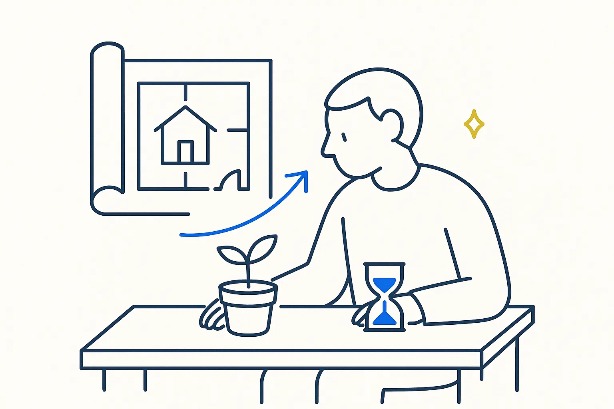

Articles
Notes from building
Small experiments first, the gap between a proof of concept and something you rely on, and the practices that make AI-written code hold.
 A Proof of Concept Is Not a Product — and That Is the PointWhat changes between the first version that runs and the one a business can rely on
A Proof of Concept Is Not a Product — and That Is the PointWhat changes between the first version that runs and the one a business can rely on
Start With a Tiny Experiment, Not a ProjectDesign thinking for the first AI tool in a small company Vibe Coding Without the HangoverEight practices that keep the speed of AI-written code and drop the surprises
Vibe Coding Without the HangoverEight practices that keep the speed of AI-written code and drop the surprisesMore on Structure Beats Magic
- Stop Prompting, Start Directing: Claude for Your Vault
- Build Your First Skill: The Anatomy, Start to Finish
- Prompts, Skills, Plugins, MCP — Which Tool, When
- Skills Are the Unit That Compounds
- Red-Team Your Own AI (Before It Just Flatters You)
- The Image-Integrity Gate: I Caught My Own Site Faking It
- Rules Before Models
- Your Database Is a View
- Own the Source, Rent the Interface
- Sidecar Markdown — Giving a PDF the Thing It Can Never Have
- Context Engineering for One
- Health Metrics in a Local DuckDB